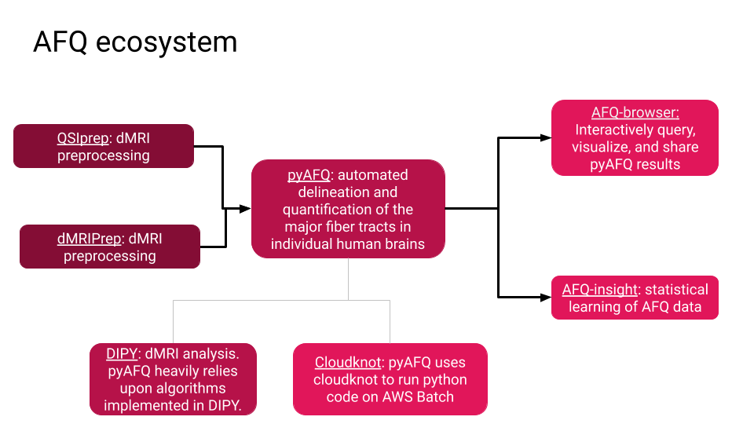

DIRECT Software Projects
pyAFQ
One of the major challenges in analyzing diffusion MRI data is that the details of the 3D structure of white matter anatomy varies between individuals. Tractometry is a methodology that solves this problem by identifying specific connections in each individual's brain, using known anatomical structures as the coordinate system to compare measurements across subjects. pyAFQ is a software library that performs automated tractometry and extracts the biophysical properties of major brain connections.
AFQ-Insight
Based on the results of pyAFQ, AFQ-Insight is a library for statistical learning. It uses tractometry results to understand the features of white matter anatomy that lead to individual differences in behavioral measurements.
AFQ-Browser
The results of tractometry can also be visualized and explored using this web-based visualization tool. This tool facilitates exploration of dMRI data-sets. We will facilitate further exploration of these results and their integration with other datasets through web-based visualization tools.
